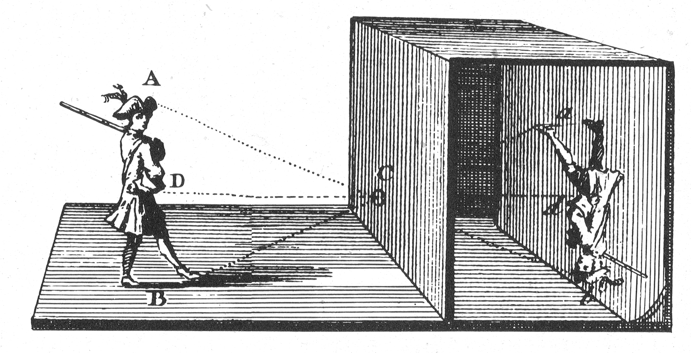
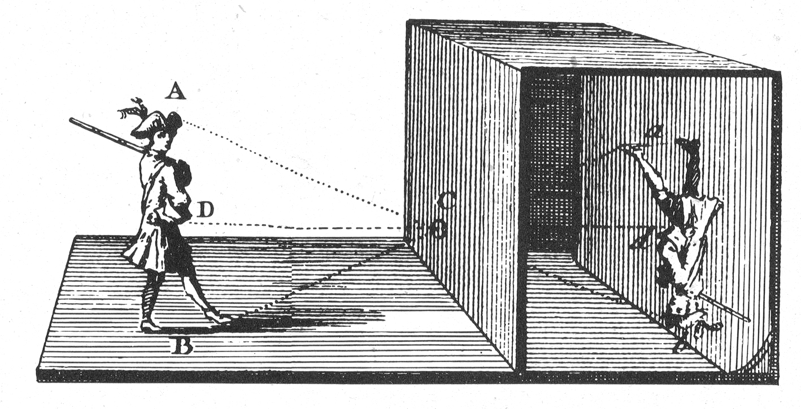
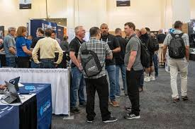

History of Techon2024
TechCon was founded in 2010 with the aim of bringing together the brightest minds in technology. Over the years, it has grown to become one of the largest and most influential tech conferences in the world.
TechCon was founded in 2010 with the aim of bringing together the brightest minds in technology. Over the years, it has grown to become one of the largest and most influential tech conferences in the world.
TechCon’s mission is to empower individuals and organizations by providing access to cutting-edge technology insights and fostering a community of collaboration, innovation, and inclusive.
Over the years, TechCon has hosted a variety of influential speakers, from pioneers in the tech industry to emerging innovators. Below are some of our past speakers:
Obama is a leading software engineer and advocate for diversity in tech. He has contributed significantly to open-source projects and is known for her work in AI development.
John is a tech entrepreneur and CEO of TechCorp. His innovative work in cloud computing has revolutionized the industry and influenced businesses worldwide.
Alice is a cybersecurity expert and advocate for secure digital environments. Her talks have focused on online safety and the future of cybersecurity in the tech industry.